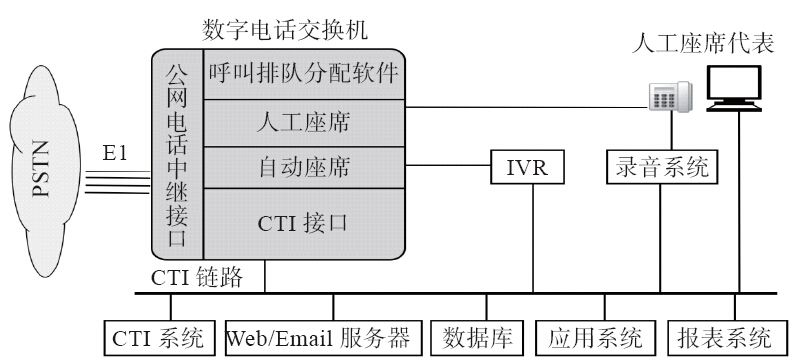
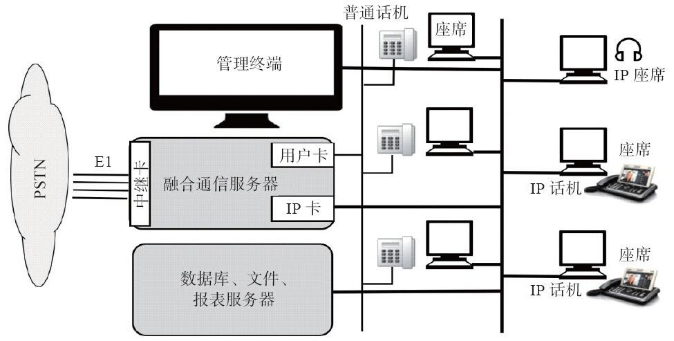
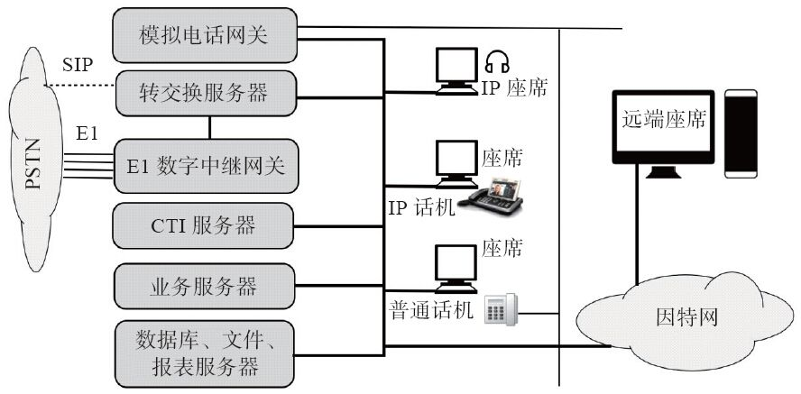
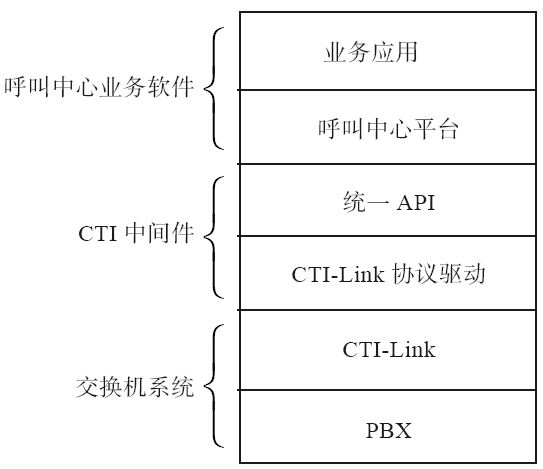

2.5 呼叫中心
基于企业级的PBX和IP-PBX的通信还只是局限于基础的通信层。而随着企业规模的扩大及用户对服务要求的提高，企业更需要在业务逻辑和管理层方面为用户提供更好的服务。当这些服务可以通过远程电话支持的方式解决的情况下，一种称为呼叫中心的业务（Call Center）便产生了。
在呼叫中心中，有专门的话务员为客户提供服务。呼叫中心通常能同时处理大量的通话，并且为了给客户更好的服务体验，呼叫中心的通信系统通常通过技术手段与CRM（Customer Ralationship Management，客户关系管理）系统集成。
本节我们简单介绍呼叫中心的基本概念及其在语音业务中的应用模式、技术发展情况以及FreeSWITCH在呼叫中心应用中的优势。
2.5.1 什么是呼叫中心
呼叫中心又称客户服务中心，它是一种基于CTI技术、充分利用通信网和计算机网的多项功能集成，并与企业连为一体的一个完整的综合信息服务系统，利用现有的各种先进的通信手段，高效地为客户提供高质量、高效率、全方位的服务。初看起来呼叫中心好像是企业在最外层加上一个服务层，实际上它不仅为外部用户，也为整个企业内部在管理、服务、调度、增值方面起到非常重要的统一协调作用 [1] 。
通俗地讲，呼叫中心是企业或机构建立的以电话为主要手段，为客户提供服务与沟通的部门组织及信息系统。百姓生活中常见的110、119、120这些应急服务电话，及电信运营商的客服电话、电话银行等都是呼叫中心的具体应用。在呼叫中心中通常是由座席代表通过电话为客户提供相应的服务与沟通。根据呼叫中心业务量不同，可以同时处理的电话量和座席代表的人数也有所不同。较小规模的呼叫中心只有几个人，大规模的呼叫中心会达到几千人。
2.5.2 呼叫中心的历史
1956年美国泛美航空公司建成了世界上第一家呼叫中心，在20世纪80年代，呼叫中心在欧美等发达国家的电信企业、航空公司、商业银行等领域得到了广泛的应用。20世纪90年代中后期，随着中国经济的发展，呼叫中心概念被引入国内。今天，呼叫中心在家电企业、邮电、银行、航空、铁路、保险、股票、房地产、旅游、公共安全等众多的行业间搭建起了企业与客户、政府与百姓之间的一座桥梁，与百姓的日常生活息息相关。
呼叫中心技术的发展可以分为以下几个阶段。
（1）第一代呼叫中心
第一代呼叫中心最早出现在民航服务领域，用于接受旅客的机票预订业务。第一代呼叫中心的系统主要在早期PBX的基础上增加了电话排队功能，那时甚至不能称为呼叫中心，而称为热线电话，其全部服务由人工完成。
（2）第二代呼叫中心
IVR（Interactive Voice Responce，交互式语音应答）系统的出现，标志着第二代呼叫中心的开始。在呼叫中心中利用IVR系统可以将大部分常见问题交由系统设备通过语音播放、DTMF（双音多频，电话机上面的数字按键所发出的频率）按键交互解决。例如我们在日常生活中常用的121121天气预报、117报时电话，通过电话银行进行余额查询、转账等业务都是通过IVR系统自动实现的。在第二代呼叫中心中，IVR系统的大量使用，可以大大减少人工业务的受理数量和人工座席的工作强度，同时可以为客户提供7×24小时全天候、不间断的服务。
（3）第三代呼叫中心
随着计算机技术的发展，CTI（Computer Telephony Integration，计算机电话集成）技术的诞生与应用，标志着第三代呼叫中心时代的开始。CTI技术实现了电话交换机系统与计算机系统的集成，即实现了语音与数据的同步。客户信息与资料采用数据库方式存储，座席代表可以在处理电话服务的同时可以从计算机系统中调取和修改客户信息数据，为客户提供个性化的服务。CTI技术的使用，推动了呼叫中心更大范围地使用。与此同时，呼叫中心中出现了专门用于电话录音的录音设备，对座席代表与客户的通话进行录音、存储和查询。
相比之前的呼叫中心系统，CTI技术的使用使得呼叫中心大部分功能实现了自动化。从客户电话接入到最终问题的解决，整个过程被完整地记录了下来。
（4）第四代呼叫中心
前三代呼叫中心均是以电话为主要的服务渠道。在2000年，伴随着互联网以及移动通信的发展与普及，将电子邮件、互联网、手机短信等渠道接入呼叫中心，成为第四代呼叫中心的标志。第四代呼叫中心也称为多媒体呼叫中心或联络中心（Contact Center） [2] 。它相对传统呼叫中心来说接入渠道丰富，同时引入了多渠道接入与多渠道统一排队等概念。
（5）下一代呼叫中心
目前，已经有厂商提出了第五代呼叫中心的概念。下一代呼叫中心的发展方向是在第四代多媒体呼叫中心的基础上，更多地融入了依托于互联网技术的媒体渠道与沟通渠道。例如：社交网络、社交媒体（如微博、微信等媒体渠道），依托于互联网的文本交谈、网上音频、网上视频等沟通渠道。
2.5.3 呼叫中心的分类
对于呼叫中心的分类可以有多种维度，如技术架构、呼叫类型、建设规模、功能、使用性质、呼叫方式、部署地点等。从呼叫方式上讲，它主要分为外呼型呼叫中心（如电话营销）、客服型呼叫中心（如客户服务）以及混合型呼叫中心（营销和客服融合）。除此之外，在这里，我们仅针对技术架构进行简单讨论。
按照呼叫中心系统所采用的技术架构的不同，呼叫中心可以分为交换机、板卡、软交换（IPCC）三种类型。
1.交换机类型的呼叫中心
交换机类型的呼叫中心的呼叫中心系统是在交换机基础上构建而成的。呼叫中心系统平台主要由交换机系统、CTI中间件、IVR系统、录音系统组成。用于呼叫中心系统平台常见的交换机系统有：Avaya、西门子、华为、阿尔卡特–朗讯等。图2-3是一个典型交换机类型的呼叫中心平台系统架构图。

图2-3 交换机类型的呼叫中心架构示意图
交换机类型的呼叫中心系统平台语音接入平台采用的是成熟稳定的交换机系统，采用专用硬件设备，具有产品成熟稳定、接入能力强、处理能力大等特点，适用于大中规模呼叫中心的建设。同时，交换机类型的呼叫中心系统平台具有系统架构复杂（需要由多个系统组成，通常会由多个厂家提供），安装部署及运维难度大，建设成本高等缺点。
2.板卡类型的呼叫中心
板卡类型的呼叫中心系统平台语音接入平台采用语音板卡实现。语音板卡按照功能分为中继卡和用户卡两种类型，分别用于中继线的接入和座席端电话终端设备的连接。板卡类型的呼叫中心系统配合会议卡和传真卡还可以实现电话会议和电子传真的功能。随着VoIP技术的普及，一些语音板卡厂商也推出了自己的IP板卡，可以支持IP座席或IP中继的接入。图2-4是一个典型板卡类型的呼叫中心平台系统架构图。

图2-4 板卡类型的呼叫中心架构示意图
板卡类型的呼叫中心系统平台语音接入平台采用工控机加语音板卡的方式实现，其最大特点是系统结构简单。板卡类型的呼叫中心系统特别适用于中小规模呼叫中心的建设。板卡类型的呼叫中心系统安装部署及运维技术难度低，相对于交换机类型的呼叫中心系统其建设成本低。对于小规模的呼叫中心通常一台服务器就可以提供一套功能齐全的呼叫中心系统。
板卡类型呼叫中心的缺点是其受限于语音板卡的容量及服务器主板总线槽位数量，单台服务器对语音呼叫的处理能力有限（通常小于120路）。虽然语音板卡厂商也提供多台设备堆叠扩展的解决方案（通常采用过机卡的方式），但是实现难度较大、稳定性差，因而很少有厂商支持这种方式。板卡类型呼叫中心通常采用通用的硬件平台和软件系统，所有呼叫过程需要上层应用程序开发实现，其系统的功能和稳定性取决于开发商的技术能力和产品成熟度。相对于交换机厂商几十年的产品成熟度，国内厂商所提供的板卡类型呼叫中心解决方案在系统的稳定性和功能上还有很大的差距。
3.软交换类型的呼叫中心
随着基于VoIP的软交换技术的发展，特别是一些优秀的开源软交换项目的出现，在呼叫中心系统建设方面出现了以软交换技术为核心的呼叫中心系统。软交换类型的呼叫中心不仅解决了板卡类型呼叫中心接入能力受限于硬件板卡的问题，同时还具备板卡类型呼叫中心系统结构简单、部署灵活、低成本的优势。除E1接入外，现在有的运营商也提供SIP线路，较交换服务器也可以绕过E1网关而直接通过运营商的SBC接入PSTN。图2-5是一个典型软交换类型呼叫中心的系统架构图。

图2-5 软交换类型的呼叫中心架构示意图
软交换类型的呼叫中心系统基于VoIP技术，具备先天的分布式部署的优势，特别适用于座席职场分散、接入分散的呼叫中心。软交换类型呼叫中心的系统容量可以通过多台服务器集群的方式平滑扩展，可以满足大型呼叫中心对于容量和性能的要求，是呼叫中心技术的发展方向。但是，软交换类型呼叫中心系统的性能和稳定性与呼叫中心厂商自身的研发能力有很大的关系。早期大多数软交换类型呼叫中心都是基于Asterisk或其他开源项目演变而来，受限于这些项目早期版本自身的问题，在市场上留下了性能差、不稳定的印象。这不是软交换技术本身的问题，而更多的是呼叫中心厂商自身技术能力的问题，它们大多采用“拿来主义”、“站在巨人肩膀上”的策略，在通信底层不愿进行太多的研发和投入，另外即使自己解决了某些问题一般也不会向开源社区公开，因而对开源软件的生态环境没有太大的贡献。
2.5.4 呼叫中心的主要技术指标
呼叫中心是一种劳动密集型产业。一个呼叫中心少则几个人，多则成百上千人。为了对呼叫中心工作人员进行有效管理，通常会通过一些量化技术指标来制定各种KPI（Key Performance Indications，即关键绩效指标），作为衡量座席代表工作指标。
每个呼叫中心会根据其具体的业务类型、企业要求来制定自己的KPI指标，其数量和标准也不尽相同。常见的KPI指标有接通率、呼入项目占有率、呼出项目工作效率、服务水平、客户满意度、平均振铃次数、监听合格率、一次性解决问题率等。一般来说，这些指标的得分越高，绩效就越好。
·接通率 ：对于呼入业务类型的呼叫中心，接通率是指IVR终极服务单元的接通量与人工座席接通量之和与进入呼叫中的呼叫量之比；对于呼出业务类型的呼叫中心，接通率是指座席呼出电话后接通量与呼出电话总量之比。
·呼入项目占有率 ：呼入项目占有率是指在某一统计时间段内，人工座席处理电话的总时长与实际登录系统时长的比率。
·呼出项目工作效率 ：呼出项目工作效率是指在某一统计时间段内，人工座席处理电话的总时长与实际登录系统时长的比率。
·服务水平 ：服务水平是对于呼入项目呼叫中心的一个技术指标，是指在某一统计时间段内应答呼叫数量占呼叫中心接入呼叫数量的百分比。
·客户满意度 ：客户满意度一般是指接受电话服务的客户对于呼叫中心所提供服务的满意程度。一般通过定期对客户进行满意度调查，或在每一次电话服务结束后系统自动对客户满意度进行调查获得数据。
·平均振铃次数 ：平均振铃次数是指呼入业务类型的呼叫中心在某一统计时间段内，客户听到IVR或人工座席接起电话之前所听到的振铃次数之和与总呼叫次数的比值。
·监听合格率 ：监听合格率是指在某一统计时间段内，质检人员通过监控、电话录音等手段抽检座席的服务质量的合格率。
·一次性解决问题率 ：一次性解决问题率是在某一统计时间段内，不需要客户再次拨打呼叫中心电话也不需要座席员回拨或转接电话就可以解决客户所提出问题的电话量所占座席员接起电话量总数的比率。
2.5.5 CTI中间件
在2.5.2节我们讲到，CTI中间件是第三代呼叫中心的重要标志。那么，什么是CTI中间件呢？CTI（Computer Telephony Integration）的字面意思为：计算机电话集成。早先的电话交换机（即PBX）是一个独立、封闭的系统设备。随着计算机技术的发展和呼叫中心需求的提出，交换机设备厂商开始考虑为交换机增加一个可以受计算机系统控制的接口，由计算机系统通过某种协议获取交换机用户话机的状态信息以及对呼叫的控制命令。这种连接和控制接口称为CTI-Link。
交换机的厂商繁多，不同交换机厂商所提供的CTI-Link的接口协议不尽相同，常见的有北电网络的Merisian Link、Avaya的ASAI/TSAPI以及欧洲交换机厂商所普遍遵循的ECMA（欧洲计算机制造协会）提出的CSTA标准。因此，要针对每一个交换机厂商的CTI-Link协议进行开发是一件很繁杂的工作，因此人们提出了CTI中间件的概念。CTI中间件在下层通过对各种CTI-Link协议的包装和抽象，屏蔽了各种交换机的不同，在上层为呼叫中心业务软件开发人员提供统一的API开发接口，这样开发人员开发的程序不仅能支持丰富的业务逻辑，还能适用于各种不同的交换机，增加了系统的灵活性，也提高了开发效率。同时CTI作为一种中间件产品，也一直长盛不衰。图2-6是CTI中间件在呼叫中心系统中的位置。

图2-6 CTI在呼叫中心系统中的位置
早期比较著名的CTI中间件有CT-CONNECT、Genesys、Quintus等。随着呼叫中心技术的发展，CTI中间件的功能也在不断丰富。CTI中间件由最初单纯的CTI-Link协议转换和标准化的单一功能发展成为涵盖多渠道统一接入、智能ACD呼叫分配、智能预测外呼、现场监控工具、数据统计分析等多个功能模块的系统平台。
在互联网尤其是移动互联网技术飞速发展的今天，人们对电话与互联网的集成又提出了新的要求，因而各厂商也增加了一些面向互联网的接口。但是，传统的CTI技术由于其产生的年代及其本身的基础架构的局限性，一般来讲是不适合互联网的。而且，随着使用VoIP软交换设备替代传统的硬件交换机，以及运营商网络由传统的PSTN向IMS及LTE的发展，理论上讲，原来的以电路交换为基础的电话系统现在也都变成了计算机了，因而计算机–电话系统集成也就失去了它原本的意义。现代的VoIP电话系统直接可以提供更现代、更开放的集成接口，SIP、3GPP、Webservice、REST、大规模并发和集群等新型的协议和开发部署方式由于其更易于与互联网集成而受开发者青睐，因而，CTI领域也必将迎来一场新的革命。
2.5.6 FreeSWITCH在呼叫中心的应用
我们可以使用FreeSWITCH项目构建一个软交换类型的呼叫中心系统。本小节我们来看一下FreeSWITCH中和呼叫中心相关的几个主要功能。
（1）语音交换功能
FreeSWITCH首先是一个IP-PBX，具备类似交换机的语音交换功能。通过路由设置或程序控制，通过FreeSWITCH可以将客户拨打进的呼叫分配到指定的座席代表所在的话机终端。同样，座席代表也可使用话机终端通过FreeSWITCH发起呼叫，拨打客户的固定电话或移动电话。语音交换功能是构成呼叫中心接入平台最基本的功能。
（2）媒体处理功能
FreeSWITCH具备媒体处理功能，可以进行录音、放音、DTMF按键分析、产生DTMF按键的操作。利用FreeSWITCH的媒体处理功能可以实现呼叫中心系统中的IVR系统和录音系统的功能。
（3）媒体监播功能
FreeSWITCH具备媒体监播功能。利用FreeSWITCH的媒体监播功能，可以实现呼叫中心所需的监听、强插、耳语等功能。
（4）电话会议功能
在某类呼叫中心业务中（如：电话外语翻译），需要多方参与通话时可以使用FreeSWITCH所提供的电话会议功能实现。
（5）电子传真功能
FreeSWITCH支持收、发电子传真的功能，可以完全替代传统基于传真卡的语音板卡传真系统。
（6）排队功能
FreeSWITCH提供mod_fifo（先进先出模块）以及mod_callcenter模块用于实现呼叫中心的排队和ACD功能。当然，开发者也可以利用FreeSWITCH所提供的接口自己完成排队策略的控制模块。
通过以上关于对FreeSWITCH与呼叫中心相关功能的介绍我们可以发现，使用FreeSWITCH开发出一套功能完善的呼叫中心系统是完全没问题的。同时，FreeSWITCH良好的性能和稳定性也为呼叫中心系统提供了可靠的保障。对于大规模呼叫中心的应用可以提供HA（双机热备方案）和Cluster（集群）方案来解决对于高可用性和大容量呼叫中心的需求。
[1] 摘自百度百科：http://baike.baidu.com/view/4061981.htm。
[2] Call Center与Contact Center的缩写都是“CC”，由于Contact Center涵盖的业务面更广，因而现代大多数人倾向于使用联络中心这一概念。但呼叫中心这一名词已深入人心，因此，本书中仍然使用呼叫中心。